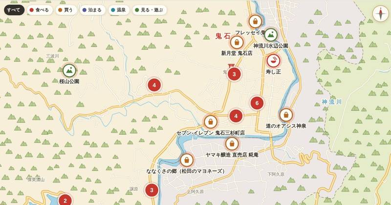

群馬県藤岡市鬼石・埼玉県神川町
鬼石さんぽ地図
神流川が流れる山あいの町、鬼石。冬桜の桜山公園、神流湖と三波石峡、八塩温泉、町なかの食堂や和菓子屋さんまで、47か所のお店と見どころ、これからのイベントを一枚の絵地図にまとめました。その日に開かれるイベントは、地図の上でピンが跳ねてお知らせします。
地図をひらく →
これからのイベント
10月12日（月）時点の予定です。内容は変わることがあるので、お出かけ前に主催者の案内をご確認ください。
9月12日（土）〜10月12日（月） 10:00〜
神流川バレーダムカードスタンプラリー2026
道の駅上州おにし
協賛店で500円以上の買い物ごとにシールがもらえ、異なる店の2枚で抽選に参加できるラリー。鬼石の抽選会は期間中の土日祝に道の駅で実施、限定ダムカードや地場産品が当たる。
くわしく見る ↗9月24日（木）〜10月16日（金）
鬼石芸術祭2026
シロオニアートセンター
町なかのあちこちを会場に開かれる国際的な芸術祭。シロオニアートセンター、きぬや、鬼石多目的ホールなどで展示や公演。最終日10/16はきぬやで公演。日程は公式サイトで。
くわしく見る ↗10月3日（土）〜10月12日（月） 12:00〜
10月18日（日）
10月25日（日） 10:00〜
11月1日（日）〜12月15日（火） 10:00〜
桜山のみかん狩り
木村観光みかん園
桜山公園へ向かう道沿い、三波川の観光みかん園で食べ放題のみかん狩り。入園料600円で持ち帰り用のみかん付き。期間は11月1日から12月中旬ごろまでの予定。
くわしく見る ↗11月7日（土） 12:00〜
オニシスカイランタンフェスティバル2026
藤岡市立鬼石小学校 校庭
鬼石小学校の校庭から、夜空にスカイランタンを上げる催し。17:30ごろ打ち上げ。ランタンは1基3,000円で事前申し込み制（先着400名）。
くわしく見る ↗11月7日（土）〜11月8日（日）
11月21日（土）〜11月22日（日）
12月1日（火）
見る・遊ぶ12か所
冬桜の桜山公園や城峯公園、三波石峡、神流湖、みかん狩りなど。
- シロオニアートセンターアートスペースアーティスト・イン・レジデンス「シロオニスタジオ」の展示スペース。
- 桜山公園公園・カフェ「しき」冬桜と紅葉で知られる公園。園内の「みんなのカフェ しき」には日替わりでお店が出店する。
- 木村観光みかん園観光みかん園桜山観光みかん組合のみかん園。みかん狩りは11月〜12月中旬ごろ。
- けんちゃんみかん園観光みかん園桜山観光みかん組合のみかん園。みかん狩りは11月〜12月中旬ごろ。
- 金沢みかん園観光みかん園桜山観光みかん組合のみかん園。みかん狩りは11月〜12月中旬ごろ。
- 神崎みかん園観光みかん園桜山観光みかん組合のみかん園（木村観光みかん園のとなり）。
- 神流湖観光ボート貸しボート・釣り神流湖の貸しボート店。へら鮒やワカサギ釣りの拠点。
- 城峯公園公園・キャンプ場神流湖の上の高台にある公園。冬桜の名所で、キャンプ場もある。
- 神流川水辺公園公園鬼石の町の北東、神流川沿いの公園。
- 下久保ダムダム神流湖をつくる大きなダム。堤の上から湖と下流の渓谷を見わたせる。
- 三波石峡渓谷（国の名勝）ダムの下流に三波石の巨石が並ぶ渓谷。国の名勝・天然記念物。
- 八塩あじさいの里花の名所八塩温泉の八塩館のとなり。約5,500株のアジサイが咲き、6月が見ごろ。
食べる11か所
町なかの食堂やラーメン、そば・うどん、お寿司、カフェ。
買う15か所
和菓子やせんべい、地元の酒店、道の駅や直売所、醤油やマヨネーズの蔵元。
- 岩崎酒店酒店商店街の酒屋さん。
- フレッセイ鬼石店スーパー町の北のスーパー。
- 道の駅上州おにし道の駅・直売所譲原の道の駅。直売所、食堂「暖炉亭」、体験工房がある。火曜休み。
- 新月堂 鬼石店和菓子まんじゅうなどの和菓子の店。
- 御菓子 昇月堂和菓子町なかの和菓子店。
- 清水屋和菓子町なかの菓子店。
- 故郷キムチキムチ販売手作りキムチを売る店。
- ばあばのシフォンシフォンケーキシフォンケーキの店。
- 長井屋製菓まんじゅう坂原のまんじゅう屋さん。売り切れじまい。
- 水落酒店酒店町なかの酒店。
- セブン-イレブン 鬼石三杉町店コンビニ町の南西のコンビニ。
- うえはらこんにゃくこんにゃくこんにゃくの店。
- 道のオアシス神泉直売所・食堂（神川町）神流川をはさんで鬼石の向かい。自家農園の野菜や加工品の直売と、地粉うどんや下久保ダムカレーの食堂。火曜休み。
- ヤマキ醸造 直売店 糀庵醤油・味噌蔵（神川町）1902年創業の醤油・味噌の蔵元。直売店のほか、蔵の見学や醤油しぼり・豆腐づくり体験（要予約）もできる。
- ななくさの郷（松田のマヨネーズ）マヨネーズ工房（神川町）国産原料でつくる「松田のマヨネーズ」の製造元。
温泉2か所
神流川沿いの日帰り温泉。
泊まる7か所
八塩温泉の旅館、ゲストハウス、古民家の宿。
お出かけの前に
営業時間や定休日は変わることがあります。お店の名前を押すと、Googleマップでその場所が開きます。掲載内容のまちがいや、載せてほしいお店・イベントがあれば、furuya@akaonisya.jp までお知らせください。
地図データ © OpenStreetMap contributors。イベント情報の一部は藤岡市ホームページなど各主催者の掲載内容をもとにしています。